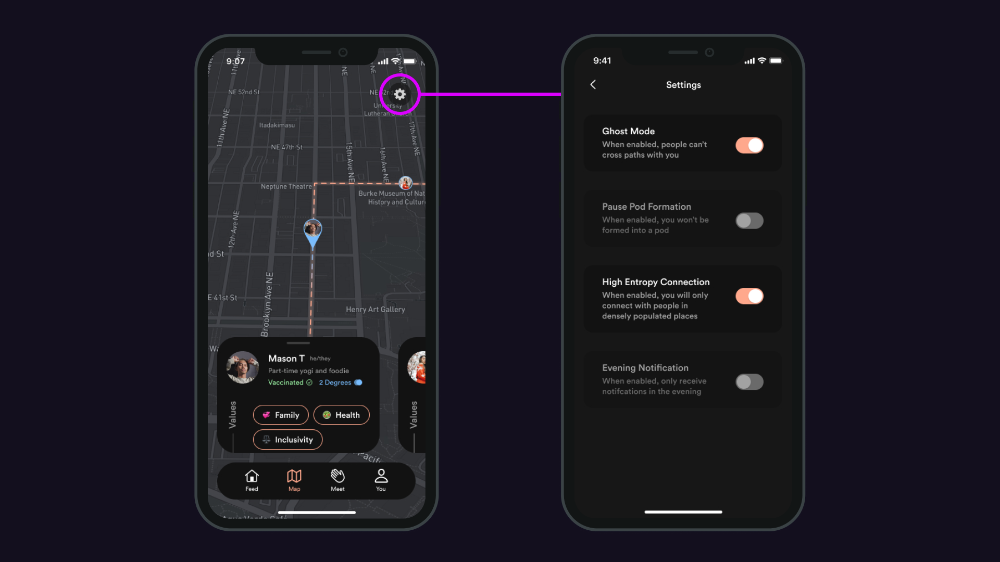

Sonder
Ryan Untalan
Aug. 15, 2021 · 3 min

Overview
Project Description: Advised by frog Design, our team designed Sonder, a mobile platform that helps Gen Z discover common ground with the people they cross paths with in life.
Role: UX/UI Designer and Video Editor
Tools: Figma, DaVinci Resolve, Miro
Time Duration: 6 months
Introduction
Comprising the majority of today's college students and emerging adults, Gen Z is in a stage of life where peer relationships play an important role in the development of their identity, self-worth, and overall well-being. And as true digital natives, social media has a prevalent role in their daily experiences.
Through our research, we explored the nuances of social media and its impact on Gen Z peer relationships. We learned the positive aspects (such as how social media can create meaningful interactions through fandom communities and serendipitous moments of connection) as well as the negative (such as its harmful impact on self-esteem and honest self-expression).
Sonder accentuates the positive aspects of social media and helps Gen Z discover mutual values and interests with the people they cross paths with.
Concept Video
Final Designs

Launch

Values and interests

Share recommendations

Plan a hangout

Hangout reminder

Map settings
Thank you for reading!